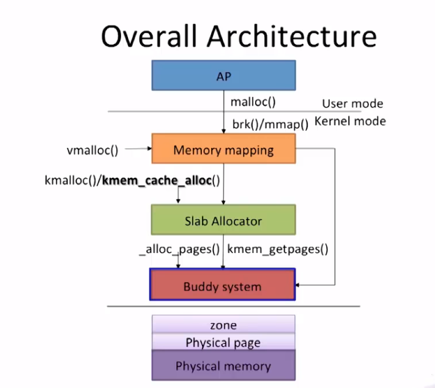

Mm
工作在哪一层
复习 PA 讲义的基础内容。
我们刚才是从程序本身来考量, 自然无法绕开绝对代码的问题. 为了解决这个问题, 我们需要从另一个方面 - 内存 - 来思考. 我们知道程序会经历编译, 链接, 加载, 运行这四个阶段, 绝对代码经过编译链接之后, 程序看到的内存地址就会确定下来了, 加载运行的时候就会让程序使用这一内存地址, 来保证程序可以正确运行. 一种尝试是把程序看到的内存和它运行时候真正使用的内存解耦开来. 这就是虚拟内存的思想.
所谓虚拟内存, 就是在真正的内存(也叫物理内存)之上的一层专门给进程使用的抽象. 有了虚拟内存之后, 进程只需要认为自己运行在虚拟地址上就可以了, 真正运行的时候, 才把虚拟地址映射到物理地址. 这样, 我们只要把程序链接到一个固定的虚拟地址, 加载的时候把它们加载到不同的物理地址, 并维护好虚拟地址到物理地址的映射关系, 就可以一劳永逸地解决上述问题了!
那么, 在进程运行的时候, 谁来把虚拟地址映射成物理地址呢? 我们在PA1中已经了解到指令的生命周期:
while (1) { 从PC指示的存储器位置取出指令; 执行指令; 更新PC; }如果引入了虚拟内存机制, PC就是一个虚拟地址了, 我们需要在访问存储器之前完成虚拟地址到物理地址的映射. 尽管操作系统管理着计算机中的所有资源, 在计算机看来它也只是一个程序而已. 作为一个在计算机上执行的程序而言, 操作系统必定无法干涉指令执行的具体过程. 所以让操作系统来把虚拟地址映射成物理地址, 是不可能实现的. 因此, 在硬件中进行这一映射是唯一的选择了: 我们在处理器和存储器之间添加一个新的硬件模块MMU(Memory Management Unit, 内存管理单元), 它是虚拟内存机制的核心, 肩负起这一机制最重要的地址映射功能. 需要说明的是, 我们刚才提到的"MMU位于处理器和存储器之间"只是概念上的说法. 事实上, 虚拟内存机制在现代计算机中是如此重要, 以至于MMU在物理上都实现在处理器芯片内部了.
但是, 只有操作系统才知道具体要把虚拟地址映射到哪些物理地址上. 所以, 虚拟内存机制是一个软硬协同才能工作的机制:
- 操作系统负责进行物理内存的管理
- 加载进程的时候决定要把进程的虚拟地址映射到哪些物理地址;
- 等到进程真正运行之前, 还需要配置MMU, 把之前决定好的映射落实到硬件上,
- 进程运行的时候, MMU就会进行地址转换, 把进程的虚拟地址映射到操作系统希望的物理地址.
注意到这个映射是进程相关的: 不同的进程有不同的映射, 这意味着对不同的进程来说, 同一个虚拟地址可能会被映射到不同的物理地址. 这恰好一劳永逸地解决了内存覆盖的问题. 绝大部分多任务操作系统就是这样做的.
memory management in Linux
基于 Linux 6.6-rc7
Buddy system 实现
Linux source code v6.6-rc7 - Bootlin Elixir Cross Referencer
- 核心文件
struct free_area：include/linux/mmzone.hstruct page：include/linux/mm_types.hmm/page_alloc.cmm/internal.h
代码流程：初始化
1373 static void __meminit zone_init_internals(struct zone *zone, enum zone_type idx, int nid,
1374 unsigned long remaining_pages)
1375 {
1376 atomic_long_set(&zone->managed_pages, remaining_pages);
1377 zone_set_nid(zone, nid);
1378 zone->name = zone_names[idx];
1379 zone->zone_pgdat = NODE_DATA(nid);
1380 spin_lock_init(&zone->lock);
1381 zone_seqlock_init(zone);
1382 zone_pcp_init(zone);
1383 }
1384
mm/mm_init.c
1385 static void __meminit zone_init_free_lists(struct zone *zone)
1386 {
1387 unsigned int order, t;
1388 for_each_migratetype_order(order, t) {
1389 INIT_LIST_HEAD(&zone->free_area[order].free_list[t]);
1390 zone->free_area[order].nr_free = 0;
1391 }
1392
1393 #ifdef CONFIG_UNACCEPTED_MEMORY
1394 INIT_LIST_HEAD(&zone->unaccepted_pages);
1395 #endif
1396 }
#ifndef PAGE_SIZE
# define PAGE_SIZE 4096
#endif
#ifndef PAGE_SHIFT
# define PAGE_SHIFT 12
#endif
/include/linux/raid/pq.h
代码流程：分配
/*
* Go through the free lists for the given migratetype and remove
* the smallest available page from the freelists
*/
static __always_inline
struct page *__rmqueue_smallest(struct zone *zone, unsigned int order,
int migratetype)
{
unsigned int current_order;
struct free_area *area;
struct page *page;
/* Find a page of the appropriate size in the preferred list */
for (current_order = order; current_order <= MAX_ORDER; ++current_order) {
area = &(zone->free_area[current_order]);
page = get_page_from_free_area(area, migratetype);
if (!page)
continue;
del_page_from_free_list(page, zone, current_order);
expand(zone, page, order, current_order, migratetype);
set_pcppage_migratetype(page, migratetype);
trace_mm_page_alloc_zone_locked(page, order, migratetype,
pcp_allowed_order(order) &&
migratetype < MIGRATE_PCPTYPES);
return page;
}
return NULL;
}
static inline struct page *get_page_from_free_area(struct free_area *area,
int migratetype)
{
return list_first_entry_or_null(&area->free_list[migratetype],
struct page, buddy_list);
}
static inline void del_page_from_free_list(struct page *page, struct zone *zone,
unsigned int order)
{
/* clear reported state and update reported page count */
if (page_reported(page))
__ClearPageReported(page);
list_del(&page->buddy_list);
__ClearPageBuddy(page);
set_page_private(page, 0);
zone->free_area[order].nr_free--;
}
static inline void expand(struct zone *zone, struct page *page,
int low, int high, int migratetype)
{
unsigned long size = 1 << high;
while (high > low) {
high--;
size >>= 1;
VM_BUG_ON_PAGE(bad_range(zone, &page[size]), &page[size]);
/*
* Mark as guard pages (or page), that will allow to
* merge back to allocator when buddy will be freed.
* Corresponding page table entries will not be touched,
* pages will stay not present in virtual address space
*/
if (set_page_guard(zone, &page[size], high, migratetype))
continue;
add_to_free_list(&page[size], zone, high, migratetype);
set_buddy_order(&page[size], high);
}
}
/* Used for pages not on another list */
static inline void add_to_free_list(struct page *page, struct zone *zone,
unsigned int order, int migratetype)
{
struct free_area *area = &zone->free_area[order];
list_add(&page->buddy_list, &area->free_list[migratetype]);
area->nr_free++;
}
static inline void set_buddy_order(struct page *page, unsigned int order)
{
set_page_private(page, order);
__SetPageBuddy(page);
}
include /linux/page-flags.h
static inline void set_page_private(struct page *page, unsigned long private)
{
page->private = private;
}
static __always_inline void __SetPage##uname(struct page *page) \
{ __set_bit(PG_##lname, &policy(page, 1)->flags); }
展开：
static __always_inline void __SetPageBuddy(struct page *page)
{
__set_bit(PG_buddy, &policy(page, 1)->flags);
}
#define bitop(op, nr, addr) \
((__builtin_constant_p(nr) && \
__builtin_constant_p((uintptr_t)(addr) != (uintptr_t)NULL) && \
(uintptr_t)(addr) != (uintptr_t)NULL && \
__builtin_constant_p(*(const unsigned long *)(addr))) ? \
const##op(nr, addr) : op(nr, addr))
#define __set_bit(nr, addr) bitop(___set_bit, nr, addr)
#define __PAGEFLAG(uname, lname, policy) \
TESTPAGEFLAG(uname, lname, policy) \
__SETPAGEFLAG(uname, lname, policy) \
__CLEARPAGEFLAG(uname, lname, policy)
#define PG_buddy 0x00000080
代码流程：释放
/**
* __free_pages - Free pages allocated with alloc_pages().
* @page: The page pointer returned from alloc_pages().
* @order: The order of the allocation.
*
* This function can free multi-page allocations that are not compound
* pages. It does not check that the @order passed in matches that of
* the allocation, so it is easy to leak memory. Freeing more memory
* than was allocated will probably emit a warning.
*
* If the last reference to this page is speculative, it will be released
* by put_page() which only frees the first page of a non-compound
* allocation. To prevent the remaining pages from being leaked, we free
* the subsequent pages here. If you want to use the page's reference
* count to decide when to free the allocation, you should allocate a
* compound page, and use put_page() instead of __free_pages().
*
* Context: May be called in interrupt context or while holding a normal
* spinlock, but not in NMI context or while holding a raw spinlock.
*/
void __free_pages(struct page *page, unsigned int order)
{
/* get PageHead before we drop reference */
int head = PageHead(page);
if (put_page_testzero(page))
free_the_page(page, order);
else if (!head)
while (order-- > 0)
free_the_page(page + (1 << order), order);
}
EXPORT_SYMBOL(__free_pages);
void free_pages(unsigned long addr, unsigned int order)
{
if (addr != 0) {
VM_BUG_ON(!virt_addr_valid((void *)addr));
__free_pages(virt_to_page((void *)addr), order);
}
}
static void __free_pages_ok(struct page *page, unsigned int order,
fpi_t fpi_flags)
{
unsigned long flags;
int migratetype;
unsigned long pfn = page_to_pfn(page);
struct zone *zone = page_zone(page);
if (!free_pages_prepare(page, order, fpi_flags))
return;
/*
* Calling get_pfnblock_migratetype() without spin_lock_irqsave() here
* is used to avoid calling get_pfnblock_migratetype() under the lock.
* This will reduce the lock holding time.
*/
migratetype = get_pfnblock_migratetype(page, pfn);
spin_lock_irqsave(&zone->lock, flags);
if (unlikely(has_isolate_pageblock(zone) ||
is_migrate_isolate(migratetype))) {
migratetype = get_pfnblock_migratetype(page, pfn);
}
__free_one_page(page, pfn, zone, order, migratetype, fpi_flags);
spin_unlock_irqrestore(&zone->lock, flags);
__count_vm_events(PGFREE, 1 << order);
}
/*
* Freeing function for a buddy system allocator.
*
* The concept of a buddy system is to maintain direct-mapped table
* (containing bit values) for memory blocks of various "orders".
* The bottom level table contains the map for the smallest allocatable
* units of memory (here, pages), and each level above it describes
* pairs of units from the levels below, hence, "buddies".
* At a high level, all that happens here is marking the table entry
* at the bottom level available, and propagating the changes upward
* as necessary, plus some accounting needed to play nicely with other
* parts of the VM system.
* At each level, we keep a list of pages, which are heads of continuous
* free pages of length of (1 << order) and marked with PageBuddy.
* Page's order is recorded in page_private(page) field.
* So when we are allocating or freeing one, we can derive the state of the
* other. That is, if we allocate a small block, and both were
* free, the remainder of the region must be split into blocks.
* If a block is freed, and its buddy is also free, then this
* triggers coalescing into a block of larger size.
*
* -- nyc
*/
static inline void __free_one_page(struct page *page,
unsigned long pfn,
struct zone *zone, unsigned int order,
int migratetype, fpi_t fpi_flags)
{
struct capture_control *capc = task_capc(zone);
unsigned long buddy_pfn = 0;
unsigned long combined_pfn;
struct page *buddy;
bool to_tail;
VM_BUG_ON(!zone_is_initialized(zone));
VM_BUG_ON_PAGE(page->flags & PAGE_FLAGS_CHECK_AT_PREP, page);
VM_BUG_ON(migratetype == -1);
if (likely(!is_migrate_isolate(migratetype)))
__mod_zone_freepage_state(zone, 1 << order, migratetype);
VM_BUG_ON_PAGE(pfn & ((1 << order) - 1), page);
VM_BUG_ON_PAGE(bad_range(zone, page), page);
while (order < MAX_ORDER) {
if (compaction_capture(capc, page, order, migratetype)) {
__mod_zone_freepage_state(zone, -(1 << order),
migratetype);
return;
}
buddy = find_buddy_page_pfn(page, pfn, order, &buddy_pfn);
if (!buddy)
goto done_merging;
if (unlikely(order >= pageblock_order)) {
/*
* We want to prevent merge between freepages on pageblock
* without fallbacks and normal pageblock. Without this,
* pageblock isolation could cause incorrect freepage or CMA
* accounting or HIGHATOMIC accounting.
*/
int buddy_mt = get_pfnblock_migratetype(buddy, buddy_pfn);
if (migratetype != buddy_mt
&& (!migratetype_is_mergeable(migratetype) ||
!migratetype_is_mergeable(buddy_mt)))
goto done_merging;
}
/*
* Our buddy is free or it is CONFIG_DEBUG_PAGEALLOC guard page,
* merge with it and move up one order.
*/
if (page_is_guard(buddy))
clear_page_guard(zone, buddy, order, migratetype);
else
del_page_from_free_list(buddy, zone, order);
combined_pfn = buddy_pfn & pfn;
page = page + (combined_pfn - pfn);
pfn = combined_pfn;
order++;
}
done_merging:
set_buddy_order(page, order);
if (fpi_flags & FPI_TO_TAIL)
to_tail = true;
else if (is_shuffle_order(order))
to_tail = shuffle_pick_tail();
else
to_tail = buddy_merge_likely(pfn, buddy_pfn, page, order);
if (to_tail)
add_to_free_list_tail(page, zone, order, migratetype);
else
add_to_free_list(page, zone, order, migratetype);
/* Notify page reporting subsystem of freed page */
if (!(fpi_flags & FPI_SKIP_REPORT_NOTIFY))
page_reporting_notify_free(order);
}
重点：
combined_pfn = buddy_pfn & pfn; page = page + (combined_pfn - pfn); pfn = combined_pfn; order++;在 Buddy 系统中，合并两个相邻的空闲块需要确定合并后的起始页面和新的块大小。
合并后的 PFN 计算
c combined_pfn = buddy_pfn & pfn;
- 当前页面的 PFN (
pfn) 和其 Buddy 的 PFN (buddy_pfn) 都是对齐到 2order 的页面边界。- Buddy 系统的块大小为 2order 页面，合并两个相邻的块后，块大小为 2order+1 页面。
- 合并的起始 PFN 必须是这两个 PFN 中较小的那个，并且对齐到 2order+1 的页面边界。
- 通过逻辑与操作（
buddy_pfn & pfn），可以清除 PFN 中的一些低有效位，从而得到合并后块的起始 PFN。示例： 假设
pfn是 5（二进制101），buddy_pfn是 4（二进制100）：
buddy_pfn & pfn = 100 & 101 = 100 (即 PFN 4)合并后的 PFN 是 4，合并后的块的大小是 2order+1 页面。
更新当前页面和 order
c page = page + (combined_pfn - pfn); pfn = combined_pfn; order++;
combined_pfn - pfn是当前页面和合并后块起始 PFN 的偏移量。- 如果当前页面的 PFN 不是合并后块的起始 PFN，需要调整页面指针以指向合并后块的起始页面。
order增加 1，因为合并后的块大小是原来的两倍。示例： 假设当前页面指针
page对应的 PFN 是 5，合并后起始 PFN 是 4：
page = page + (4 - 5) = page -1这样，
page现在指向 PFN 4 的页面，合并后的块的大小为 2order+1 页面。总结
合并相邻的 Buddy 块需要：
- 使用逻辑与操作（
&）确定合并后块的起始 PFN。- 调整页面指针以指向合并后块的起始页面。
- 增加
order以反映新的块大小。
misc
迁移类型、zone、node都是怎么提出来的？提出来结局什么问题的？
参考资料
slab 实现
/mm/slab.h：struct kmem_cache_node/include/linux/slab_def.h：struct kmem_cache、struct kmem_cache_cpu
主要是 kmem_cache、kmem_cache_cpu、kmem_cache_node 这三个结构体
我这里最困惑的就是初始化的部分
/*
* Initialisation. Called after the page allocator have been initialised and
* before smp_init().
*/
void __init kmem_cache_init(void)
{
int i;
kmem_cache = &kmem_cache_boot;
if (!IS_ENABLED(CONFIG_NUMA) || num_possible_nodes() == 1)
use_alien_caches = 0;
for (i = 0; i < NUM_INIT_LISTS; i++)
kmem_cache_node_init(&init_kmem_cache_node[i]);
/*
* Fragmentation resistance on low memory - only use bigger
* page orders on machines with more than 32MB of memory if
* not overridden on the command line.
*/
if (!slab_max_order_set && totalram_pages() > (32 << 20) >> PAGE_SHIFT)
slab_max_order = SLAB_MAX_ORDER_HI;
/* Bootstrap is tricky, because several objects are allocated
* from caches that do not exist yet:
* 1) initialize the kmem_cache cache: it contains the struct
* kmem_cache structures of all caches, except kmem_cache itself:
* kmem_cache is statically allocated.
* Initially an __init data area is used for the head array and the
* kmem_cache_node structures, it's replaced with a kmalloc allocated
* array at the end of the bootstrap.
* 2) Create the first kmalloc cache.
* The struct kmem_cache for the new cache is allocated normally.
* An __init data area is used for the head array.
* 3) Create the remaining kmalloc caches, with minimally sized
* head arrays.
* 4) Replace the __init data head arrays for kmem_cache and the first
* kmalloc cache with kmalloc allocated arrays.
* 5) Replace the __init data for kmem_cache_node for kmem_cache and
* the other cache's with kmalloc allocated memory.
* 6) Resize the head arrays of the kmalloc caches to their final sizes.
*/
/* 1) create the kmem_cache */
/*
* struct kmem_cache size depends on nr_node_ids & nr_cpu_ids
*/
create_boot_cache(kmem_cache, "kmem_cache",
offsetof(struct kmem_cache, node) +
nr_node_ids * sizeof(struct kmem_cache_node *),
SLAB_HWCACHE_ALIGN, 0, 0);
list_add(&kmem_cache->list, &slab_caches);
slab_state = PARTIAL;
/*
* Initialize the caches that provide memory for the kmem_cache_node
* structures first. Without this, further allocations will bug.
*/
new_kmalloc_cache(INDEX_NODE, KMALLOC_NORMAL, ARCH_KMALLOC_FLAGS);
slab_state = PARTIAL_NODE;
setup_kmalloc_cache_index_table();
/* 5) Replace the bootstrap kmem_cache_node */
{
int nid;
for_each_online_node(nid) {
init_list(kmem_cache, &init_kmem_cache_node[CACHE_CACHE + nid], nid);
init_list(kmalloc_caches[KMALLOC_NORMAL][INDEX_NODE],
&init_kmem_cache_node[SIZE_NODE + nid], nid);
}
}
create_kmalloc_caches(ARCH_KMALLOC_FLAGS);
}
kmem_cache_create
create_cache
kmem_cache_zalloc
kmem_cache_alloc
slab_alloc
slab_alloc_node
__kmem_cache_create
kmem_cache_open
listadd
static void *__slab_alloc_node(struct kmem_cache *s,
gfp_t gfpflags, int node, unsigned long addr, size_t orig_size)
{
struct partial_context pc;
struct slab *slab;
void *object;
pc.flags = gfpflags;
pc.slab = &slab;
pc.orig_size = orig_size;
object = get_partial(s, node, &pc);
if (object)
return object;
slab = new_slab(s, gfpflags, node);
if (unlikely(!slab)) {
slab_out_of_memory(s, gfpflags, node);
return NULL;
}
object = alloc_single_from_new_slab(s, slab, orig_size);
return object;
}
/*
* Called only for kmem_cache_debug() caches to allocate from a freshly
* allocated slab. Allocate a single object instead of whole freelist
* and put the slab to the partial (or full) list.
*/
static void *alloc_single_from_new_slab(struct kmem_cache *s,
struct slab *slab, int orig_size)
{
int nid = slab_nid(slab);
struct kmem_cache_node *n = get_node(s, nid);
unsigned long flags;
void *object;
object = slab->freelist;
slab->freelist = get_freepointer(s, object);
slab->inuse = 1;
if (!alloc_debug_processing(s, slab, object, orig_size))
/*
* It's not really expected that this would fail on a
* freshly allocated slab, but a concurrent memory
* corruption in theory could cause that.
*/
return NULL;
spin_lock_irqsave(&n->list_lock, flags);
if (slab->inuse == slab->objects)
add_full(s, n, slab);
else
add_partial(n, slab, DEACTIVATE_TO_HEAD);
inc_slabs_node(s, nid, slab->objects);
spin_unlock_irqrestore(&n->list_lock, flags);
return object;
}
/* Reuses the bits in struct page */
struct slab {
unsigned long __page_flags;
#if defined(CONFIG_SLAB)
struct kmem_cache *slab_cache;
union {
struct {
struct list_head slab_list;
void *freelist; /* array of free object indexes */
void *s_mem; /* first object */
};
struct rcu_head rcu_head;
};
unsigned int active;
#elif defined(CONFIG_SLUB)
struct kmem_cache *slab_cache;
union {
struct {
union {
struct list_head slab_list;
#ifdef CONFIG_SLUB_CPU_PARTIAL
struct {
struct slab *next;
int slabs; /* Nr of slabs left */
};
#endif
};
/* Double-word boundary */
union {
struct {
void *freelist; /* first free object */
union {
unsigned long counters;
struct {
unsigned inuse:16;
unsigned objects:15;
unsigned frozen:1;
};
};
};
#ifdef system_has_freelist_aba
freelist_aba_t freelist_counter;
#endif
};
};
struct rcu_head rcu_head;
};
unsigned int __unused;
#else
#error "Unexpected slab allocator configured"
#endif
atomic_t __page_refcount;
#ifdef CONFIG_MEMCG
unsigned long memcg_data;
#endif
};
*
* State of the slab allocator.
*
* This is used to describe the states of the allocator during bootup.
* Allocators use this to gradually bootstrap themselves. Most allocators
* have the problem that the structures used for managing slab caches are
* allocated from slab caches themselves.
*/
enum slab_state {
DOWN, /* No slab functionality yet */
PARTIAL, /* SLUB: kmem_cache_node available */
PARTIAL_NODE, /* SLAB: kmalloc size for node struct available */
UP, /* Slab caches usable but not all extras yet */
FULL /* Everything is working */
};
发现在 /mm/slab.c 的实现中有很多：
#if DEBUG
static void check_irq_off(void)
{
BUG_ON(!irqs_disabled());
}
static void check_irq_on(void)
{
BUG_ON(irqs_disabled());
}
static void check_mutex_acquired(void)
{
BUG_ON(!mutex_is_locked(&slab_mutex));
}
static void check_spinlock_acquired(struct kmem_cache *cachep)
{
#ifdef CONFIG_SMP
check_irq_off();
assert_raw_spin_locked(&get_node(cachep, numa_mem_id())->list_lock);
#endif
}
static void check_spinlock_acquired_node(struct kmem_cache *cachep, int node)
{
#ifdef CONFIG_SMP
check_irq_off();
assert_raw_spin_locked(&get_node(cachep, node)->list_lock);
#endif
}
整体架构
分为两部分：page allocator、slab allocator
